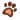

Jeżeli chcesz adoptować psa lub kota to po pierwsze przemyśl tę decyzję. Nie decyduj się pod wpływem chwili. Adoptuj świadomie i odpowiedzialnie. Rozważ następujące kwestie:
 czy Twój styl życia pozwala na opiekę nad zwierzęciem
dysponujesz warunkami odpowiednimi dla zwierzęcia
czy inni domownicy wyrażają zgodę
kto się nim zajmie jeśli wyjedziesz na wakacje lub zachorujesz
czy Twoja sytuacja materialna pozwala na prawidłową opiekę nad zwierzęciem (odpowiednia karma, szczepienia, leczenie, badania okresowe, ochrona przeciw kleszczom)
Przed przyjazdem warto:
Przejrzeć bazę ogłoszeń wszystkich zwierząt do adopcji
Poczytać opisy zwierząt i skontaktować się z wolontariuszem danego zwierzęcia by uzyskać więcej informacji i w przypadku psa umówić się na spacer przedadopcyjny
Przeczytać JAK WYBRAĆ PSA DLA SIEBIE? lub ZANIM ADOPTUJESZ KOTA
ADOPCJA KOTA
W celu adopcji kota udaj się na kociarnię.
Po wybraniu kota wypełnij ankiete przedadopcyjną.
Ostateczną decyzje o adopcji podejmuje pracownik Biura Adopcji
Odprawa weterynaryjna (badanie lekarskie, omówienie stanu zdrowia, informacje o szczepieniach, wystawienie książeczki zdrowia zwierzęcia, wprowadzenia danych właściciela do ogólnokrajowej bazy zwierząt zaczipowanych)
Zawarcie umowy adopcyjnej. Umowa ma charakter cywilno-prawny i od tego momentu ponosisz odpowiedzialność za zaadoptowane zwierzę.
Uwaga: Decydując się na adopcję kota lub rozważając ją, koniecznie weź ze sobą do schroniska transporter lub torbę transportową do przewozu kotów
ADOPCJA PSA
Spacery przedadopcyjne z wolontariuszem lub opiekunem danego psa. (W trosce o dobro naszych podopiecznych, by ich adopcje były przemyślane i odpowiedzialne wymagane są min. dwa spacery przedadopcyjne ale ostateczną ilość spacerów określa opiekun lub wolontariusz w zależności od charakteru psa. Decyzja o adopcji nie może być podejmowana pod wpływem chwili. Pies musi być dobrany do właściciela. Ponadto kilka spacerów pozwala lepiej poznać osoby zainteresowane adopcją. Jeden spacer to mało żeby poznać psa. Kilka wizyt zmniejszy ogromny stres psa związany ze zmianą miejsca zamieszkania.)
Wypełnienie ankiety przedadopcyjnej i rozmowa z pracownikiem Biura Adopcji (po pierwszym spacerze).
Opiekun lub wolontariusz wpisuje swoją opinie w ankiecie przedadopcyjnej
Ostateczną decyzje o adopcji podejmuje pracownik Biura Adopcji
Odprawa weterynaryjna (badanie lekarskie, omówienie stanu zdrowia, informacje o szczepieniach, wystawienie książeczki zdrowia zwierzęcia, wprowadzenia danych właściciela do ogólnokrajowej bazy zwierząt zaczipowanych)
Zawarcie umowy adopcyjnej. Umowa ma charakter cywilno-prawny i od tego momentu ponosisz odpowiedzialność za zaadoptowane zwierzę.
ODMOWA ADOPCJI
Każdy musi liczyć się z tym, że może dostać odmowę adopcji konkretnego zwierzęcia. Zwierzęta to żywe istoty, które mają konkretne charaktery i predyspozycje. Nie każdy dom jest odpowiedni dla każdego zwierzęcia. Na przykład:
niektóre psy wymagają bardziej doświadczonych właścicieli
nie każdy pies nadaje się dla osoby, która w przeszłości nie miała psa.
młody energiczny pies potrzebuje aktywnego domu